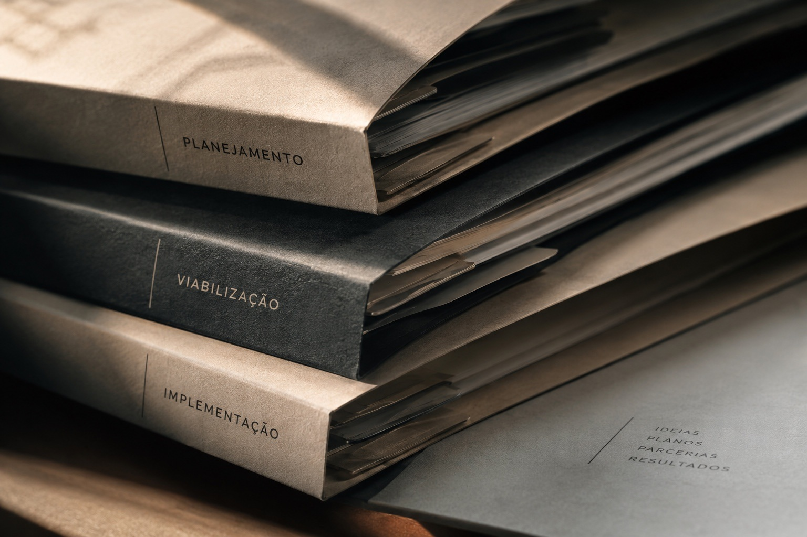

Viabilização de Projetos">Desenvolvimento e
Viabilização de Projetos
Da ideia à estrutura necessária
para fazê-la acontecer.
Desenvolvemos projetos a partir de demandas, oportunidades ou conceitos ainda em construção, transformando-os em propostas estruturadas, tecnicamente consistentes e operacionalmente viáveis.
Nossa atuação pode compreender todas as etapas do processo ou momentos específicos de sua construção.
Transformamos ideias e demandas em projetos com objetivos, escopo, entregas e estratégia claramente definidos.
Estruturamos etapas, responsabilidades, recursos, necessidades operacionais e condições para a implementação do projeto.
Construímos cronogramas físicos e financeiros compatíveis com o escopo, os objetivos e a realidade de execução.
Avaliamos possibilidades, formatos, recursos e caminhos para tornar projetos exequíveis e sustentáveis.
Adequamos e estruturamos projetos para participação em editais, chamadas públicas, programas, mecanismos de financiamento e outras oportunidades.
Desenvolvemos estratégias, propostas, ativos e contrapartidas para ampliar o potencial de captação e relacionamento com parceiros.
Apoiamos a implementação, o acompanhamento de cronogramas, entregas, orçamento, parceiros e demais etapas necessárias à realização.